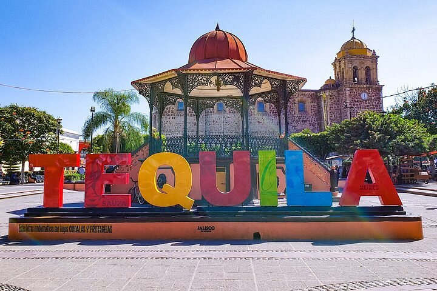
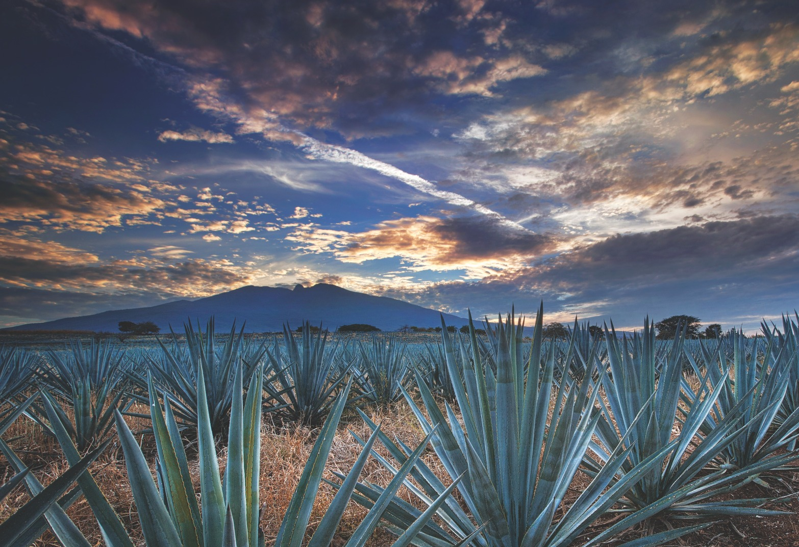
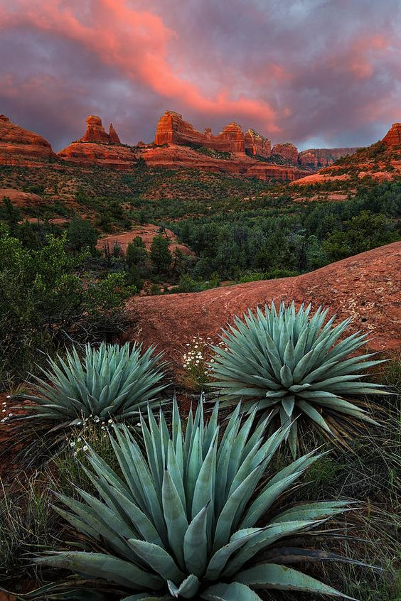

Lugares para conocer

Centro de Tequila
Puedes recorrer sus calles y conocer la arquitectura y el ambiente tradicional del pueblo. Plaza Principal y Tradiciones: Un punto de gran movimiento con venta de artesanías, antojitos y los tradicionales "cantaritos" (bebida típica a base de tequila, cítricos y refresco). Sitios de interés cultural: La Parroquia de Santiago Apóstol, el Museo Nacional del Tequila (MUNAT) y los históricos lavaderos públicos de la calle de Las Tabernas.

Campos de agave
Los paisajes de agave son uno de los elementos más representativos de la región. Paisaje Agavero: Campos extensos sembrados con agave azul (Tequila Weber) que caracterizan toda la región. Destilerías Históricas: Espacios legendarios como La Rojeña de Jose Cuervo y la Quinta Sauza, donde se explican los procesos de jima y destilación.

Paisajes
Tequila cuenta con paisajes que permiten conocer parte de la naturaleza de Jalisco. Volcán de Tequila: Unimponente gigante dormido de aproximadamente 2,900 metros de altitud cuyas cenizas y suelos fértiles nutren el crecimiento de la planta del agave. Cañón del Río Grande: Un profundo y dramático desfiladero que marca el límite geográfico natural de esta región vallisneria.